In this lab, you will create a comprehensive symbol within the $Mixer template — a container template that holds multiple child objects such as pumps, valves, agitators, level meters, and temperature sensors. The symbol you build will embed symbols from all contained objects using relative references, add text labels, draw connectors between equipment, and apply element styles for visual consistency.
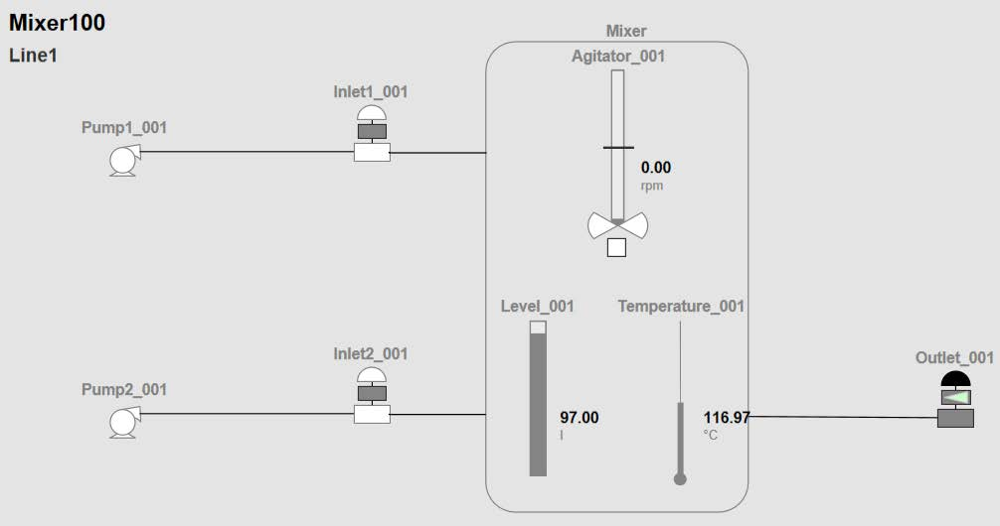
Lab 6 overview — the target result is a complete mixer process diagram showing two pumps feeding into a mixer through inlet valves, with an agitator, level meter, and temperature sensor inside the mixer tank, and an outlet valve on the discharge side. (Section 3-75)
Lab Objectives
Upon completion of this lab, you will be able to:
Embed symbols from contained objects using relative references
Configure and embed symbols within a containment relationship
Add Text elements and configure Value Display animations
Apply element styles to elements for visual consistency
Use Connection Points and Connectors to draw process flow lines
Change element display orders using the Elements list
Configure the drawing canvas with a fixed size
Part 1: Creating a Symbol in $Mixer
Reference: Pages 214–215 (Section 3-76 to 3-77)
Steps 1–4: Create and Name the Symbol
On the Templates tab, navigate to Training \ Project and double-click $Mixer to open it in the Object Editor. On the Attributes tab, in the Content pane, click Add to create a new symbol. Rename it to MixingProcess_Detailed and add the description "Includes symbols from all contained objects."
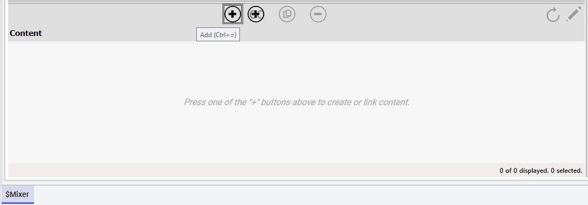
Content pane before adding a symbol — the pane is empty with instructions to "Press one of the '+' buttons above to create or link content." The Add button (left "+" icon) creates a new symbol. (Section 3-76)
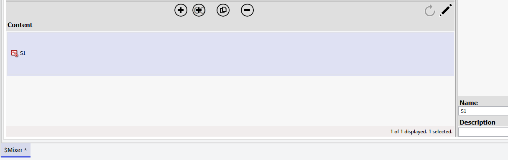
Content pane after clicking Add — a new symbol named S1 appears in the list. The asterisk on the tab indicates unsaved changes. (Section 3-76)
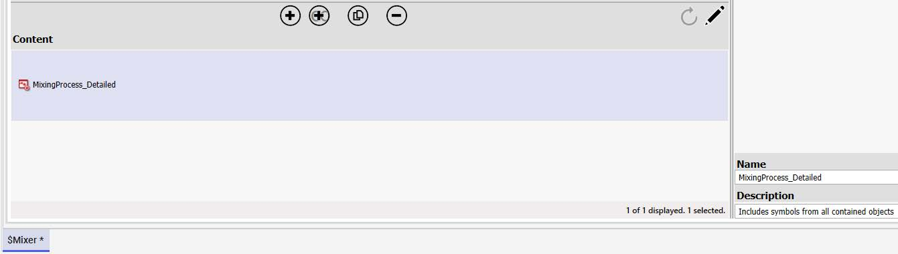
Content pane after renaming — the symbol is now named MixingProcess_Detailed with the description "Includes symbols from all contained objects." (Section 3-76)
Steps 5–6: Open and Configure the Symbol
With MixingProcess_Detailed selected, click Edit Content to open it in the Graphic Editor. On the Properties tab, set the Runtime Behavior \ ContentType property to Detailed.
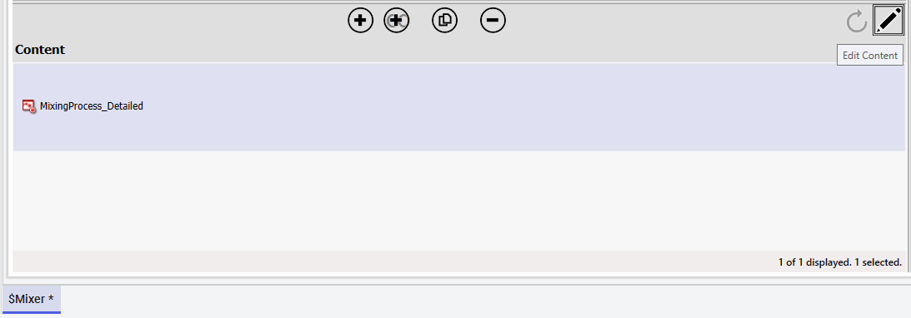
Content pane with the Edit Content button (pen icon) highlighted — clicking this opens the selected symbol in the Graphic Editor. Alternatively, you can double-click the symbol. (Section 3-77)
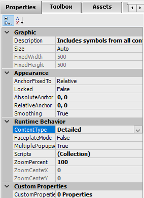
Properties tab in the Graphic Editor — ContentType is set to "Detailed" under Runtime Behavior. This ensures the symbol is displayed when users navigate to the Mixer equipment level. (Section 3-77)
Part 2: Embedding Symbols via Relative References
Reference: Pages 216–217 (Section 3-78 to 3-79)
Key Concept — Embedding via Relative References
The Galaxy Browser supports embedding symbols from relative references. When you click "Embed Industrial Graphic" in the toolbar, the Galaxy Browser opens with a Relative References tab. This tab lists all objects that are children of the current object (e.g., Me.Agitator, Me.Inlet1, Me.Level, etc.). You select a relative reference, then choose which symbol from that object to embed. This creates a live link — the embedded symbol will display data from the corresponding contained object at runtime.
Steps 7–10: Embed the Agitator Symbol
In the Graphic Editor toolbar, click Embed Industrial Graphic. In the Galaxy Browser, click the Relative References tab. Select Me.Agitator in the left pane, then select Agitator_Detailed in the right pane and click OK.
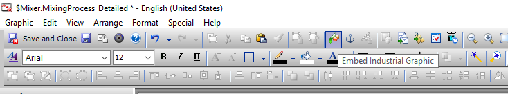
Graphic Editor toolbar — the "Embed Industrial Graphic" button (highlighted with red arrow) opens the Galaxy Browser to embed symbols from relative references or the Graphics tab. (Section 3-78)
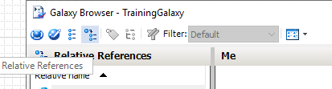
Galaxy Browser with the Relative References tab active — this tab lists all objects relative to the current $Mixer template: Me, Me.Agitator, Me.Inlet1, Me.Inlet2, Me.Level, Me.Outlet, Me.Pump1, Me.Pump2, and Me.Temperature. (Section 3-78)
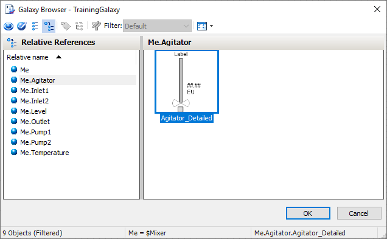
Galaxy Browser with Me.Agitator selected — the right pane shows the Agitator_Detailed symbol preview. Click OK to embed this symbol into the MixingProcess_Detailed canvas. (Section 3-78)
Steps 11–13: Place and Embed All Contained Symbols
Click the drawing canvas to place the agitator graphic. Then repeat Steps 7–11 to embed all remaining symbols. Arrange them on the canvas as shown in the layout diagram.
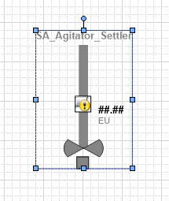
The agitator symbol (me_Agitator_Agitator_Detailed1) placed on the drawing canvas — an industrial agitator with motor, vertical shaft, and impeller, selected with blue handles. (Section 3-79)
Relative Reference
Symbol to Embed
Me.Agitator
Agitator_Detailed
Me.Inlet1
Valve_Detailed
Me.Inlet2
Valve_Detailed
Me.Level
Level_Detailed
Me.Outlet
Valve_Detailed
Me.Pump1
Pump_Detailed
Me.Pump2
Pump_Detailed
Me.Temperature
Temperature_Detailed
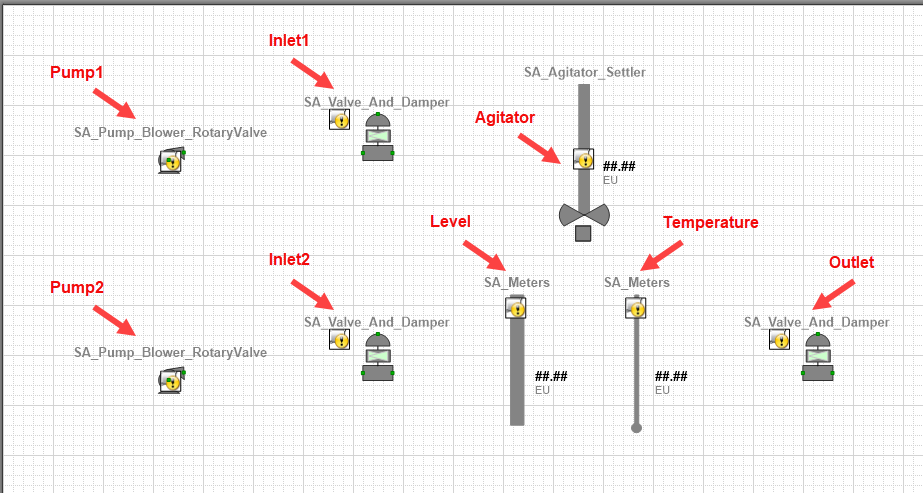
Complete canvas layout with all embedded symbols arranged — Pump1 and Pump2 (left column), Inlet1 and Inlet2 (middle-left), Agitator (top-right), Level and Temperature (middle), and Outlet (bottom-right). (Section 3-79)
Part 3: Adding the Tank Vessel and Managing Element Order
Reference: Pages 218–219 (Section 3-80 to 3-81)
Steps 14–17: Add Tank Vessel and Send to Back
On the Toolbox tab, search for "SA_Tank_Vessel" and drag it to the canvas. Position and resize it to cover the Agitator, Level, and Temperature symbols. In the Elements list, select SA_Tank_Vessel1, right-click, and select Order | Send To Back to move it behind the other symbols.
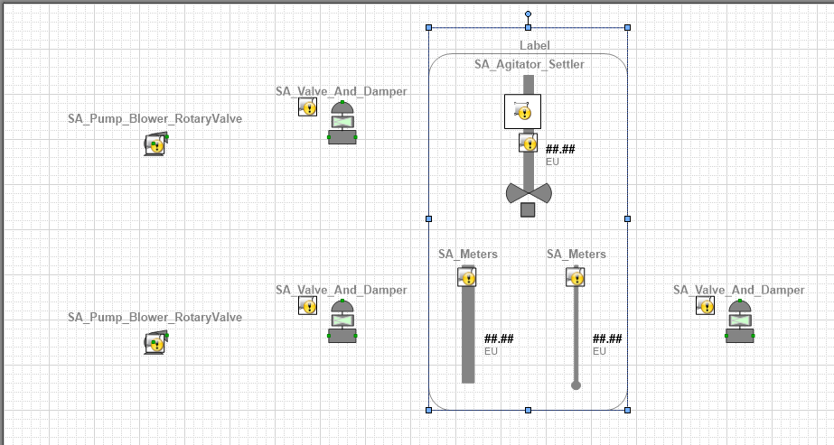
SA_Tank_Vessel1 positioned on the canvas — the tank vessel graphic is placed over the agitator, level, and temperature symbols. It will be sent to the back so the contained symbols appear in front. (Section 3-80)
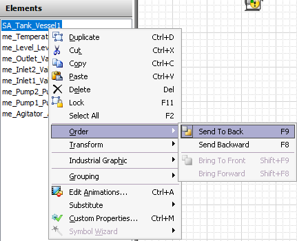
Elements list with the context menu open — selecting "Order | Send To Back" (F9) moves SA_Tank_Vessel1 to the bottom of the z-order, placing it behind all other symbols on the canvas. (Section 3-80)
Steps 18–20: Substitute Strings
With SA_Tank_Vessel1 selected, right-click and select Substitute | Substitute Strings. In the dialog, replace "Label" with "Mixer" in the New column, then click OK.
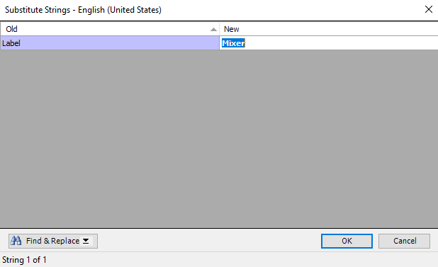
Substitute Strings dialog — "Label" in the Old column is being replaced with "Mixer" in the New column. This renames the tank vessel's label text from the default "Label" to "Mixer". (Section 3-81)
Part 4: Adding Connection Points and Connectors
Reference: Pages 219–225 (Section 3-81 to 3-87)
Connection Points and Connectors are essential for creating process flow diagrams. Connection Points define where connectors attach to elements, while Connectors draw the lines between them.
Key Concept — Connection Points and Connectors Connection Points are snap points placed on element borders where connectors can attach. When you hover over an element border with a Connection Point tool active, the border turns green to indicate a valid placement location. Connectors are lines drawn between connection points — click and drag from one connection point to another to create the connector. The connector automatically snaps to the connection points.
Steps 21–25: Place Connection Points on the Tank
In the Tools pane, double-click Connection Point. Place three connection points on the tank border: two on the left side (aligned with Inlet1 and Inlet2) and one on the right side (aligned with Outlet). The tank border turns green when the cursor hovers over it.
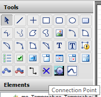
Tools pane with the Connection Point tool highlighted (circle with 4 outward lines) — double-click this tool to keep it active for placing multiple connection points. (Section 3-81)
Aligning the first connection point — the crosshair cursor is positioned on the tank border, aligned with the built-in connection point on the right side of Inlet1. The tank border turns green when the cursor hovers over it. (Section 3-82)
Connection point placed on the tank border — a green square appears where the connection point was placed, ready for a connector to be drawn to it. (Section 3-82)
Aligning the second connection point — positioned on the left tank border, aligned with the right-side connection point of Inlet2. (Section 3-83)
Second connection point added to the left tank border — two green squares now mark where Inlet1 and Inlet2 connectors will attach. (Section 3-83)
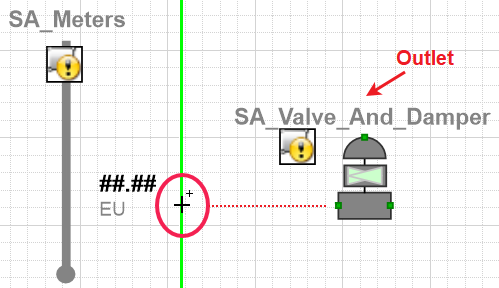
Aligning the third connection point — positioned on the right tank border, aligned with the left-side connection point of the Outlet valve. (Section 3-83)
Steps 26–31: Draw Connectors Between Equipment
In the Tools pane, double-click Connector. Draw connectors by clicking and dragging from one connection point to another:
Connector
From
To
1
Pump1 (top-right)
Inlet1 (left side)
2
Pump2 (top-right)
Inlet2 (left side)
3
Inlet1 (right side)
Tank border (1st connection point)
4
Inlet2 (right side)
Tank border (2nd connection point)
5
Tank border (3rd connection point)
Outlet (left side)
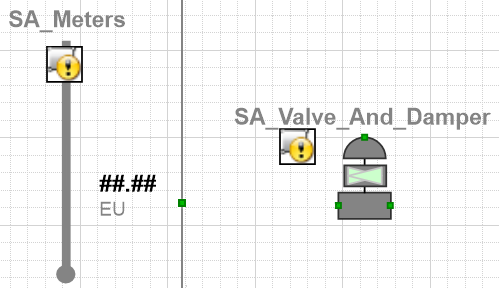
Tank vessel (SA_Meters) with a green connection point on its right border, positioned next to the SA_Valve_And_Damper outlet valve. The green square marks where the outlet connector will attach. (Section 3-84)
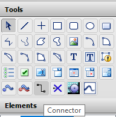
Tools pane with the Connector tool highlighted — double-click to keep it active for drawing multiple connectors between equipment elements. (Section 3-84)
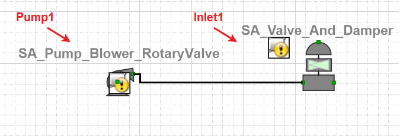
First connector drawn between Pump1 (SA_Pump_Blower_RotaryValve) and Inlet1 (SA_Valve_And_Damper) — a solid black line connects the right-side green connection port of Pump1 to the left-side connection port of Inlet1. (Section 3-84)
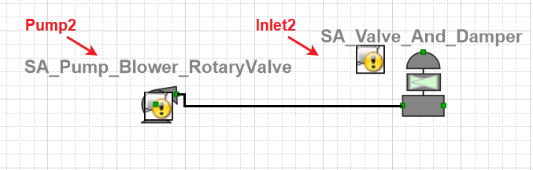
Second connector drawn between Pump2 and Inlet2 — a horizontal line connects the two components on the lower-left side of the diagram. (Section 3-85)
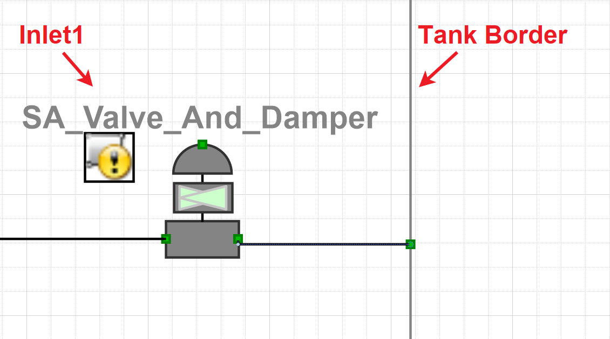
Third connector drawn from Inlet1's right connection point to the first tank border connection point — connecting the inlet valve to the mixer tank. (Section 3-85)
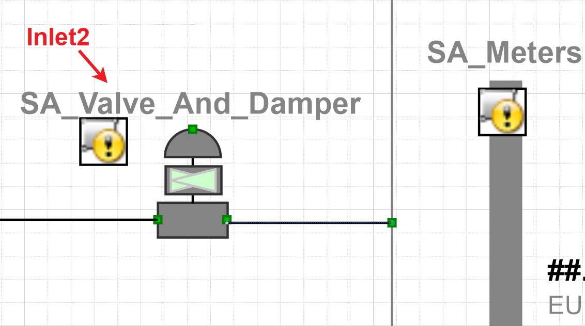
Fourth connector drawn from Inlet2's right connection point to the second tank border connection point — connecting the second inlet valve to the mixer tank. (Section 3-86)
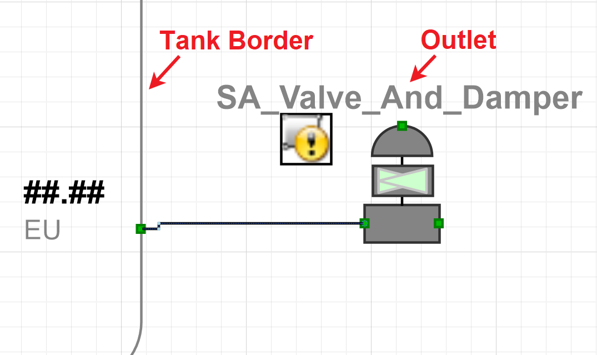
Fifth connector drawn from the third tank border connection point to the Outlet valve — completing the process flow from tank to discharge. (Section 3-86)
Steps 32–34: Straighten Connectors
Click the Pointer tool to exit Connector mode. In the Elements list, hold CTRL and select Connector3, Connector4, and Connector5. On the Properties tab, change the Appearance \ ConnectionType property to Straight to remove the bend at the valve components.
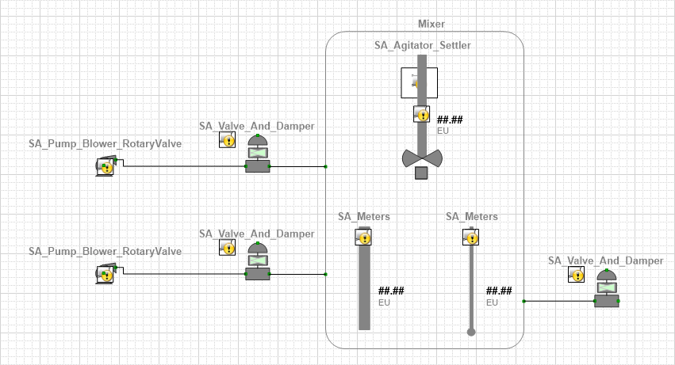
Complete process diagram with all connectors drawn — two pumps feed through inlet valves into the mixer tank, with the agitator, level meter, and temperature sensor inside. An outlet valve connects on the discharge side. (Section 3-87)
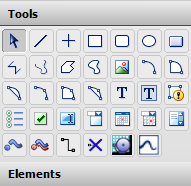
Multi-selecting Connector3, Connector4, and Connector5 in the Elements list — holding CTRL while clicking allows multiple selection for batch property changes. (Section 3-87)
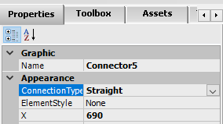
Properties panel for Connector5 — the Appearance \ ConnectionType is set to "Straight" to remove bends at the valve connection points, creating clean straight lines. (Section 3-87)
Part 5: Adding Text Labels with Value Display Animations
Reference: Pages 226–231 (Section 3-88 to 3-93)
Steps 35–42: Create and Style Text Elements
In the Tools pane, select the Text tool. Click the top-left of the canvas and type "Object Name" then press Enter and type "Area Name" to create two text elements. Rename Text1 to ObjectName with ElementStyle Title, and Text2 to AreaName with ElementStyle Heading.
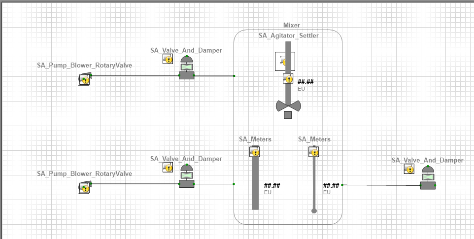
Process diagram with straightened connectors — all five connectors now display as straight lines without bends at the valve connection points. (Section 3-88)
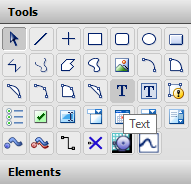
Tools pane with the Text tool (T icon) highlighted — select this tool to add text labels to the drawing canvas. (Section 3-88)
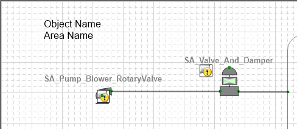
Text elements placed on the canvas — "Object Name" (Text1) and "Area Name" (Text2) appear at the top-left of the drawing area, ready for styling and animation configuration. (Section 3-89)
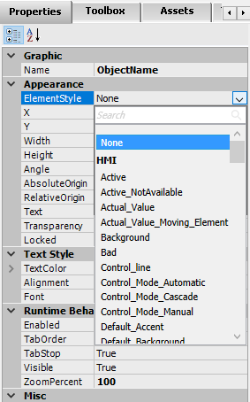
Properties panel for Text1 — the ElementStyle property is being set to "Title" using the searchable dropdown. The Graphic \ Name is set to "ObjectName". (Section 3-89)
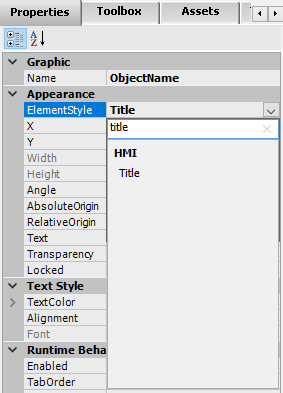
Properties panel after applying the Title style — ElementStyle shows "Title" and the element is positioned at X=70, Y=29 on the canvas. (Section 3-90)
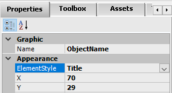
Properties panel for Text2 — the Graphic \ Name is set to "AreaName" and the ElementStyle is set to "Heading" for a secondary text style. (Section 3-90)
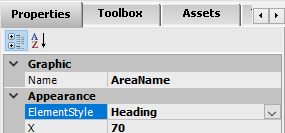
Text elements repositioned — "Object Name" with Title style and "Area Name" with Heading style are positioned at the top-left of the canvas with appropriate spacing. (Section 3-90)
Steps 43–47: Configure Value Display for ObjectName
Double-click the ObjectName element to open the Edit Animations dialog. Click Add Animation and select Value Display. Configure the animation with States: Name and Name to be displayed: Tag Name (default). Click OK.
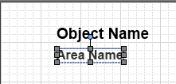
Edit Animations dialog — clicking "+" and selecting "Value Display" from the Visualization column adds a value display animation to the ObjectName element. (Section 3-91)
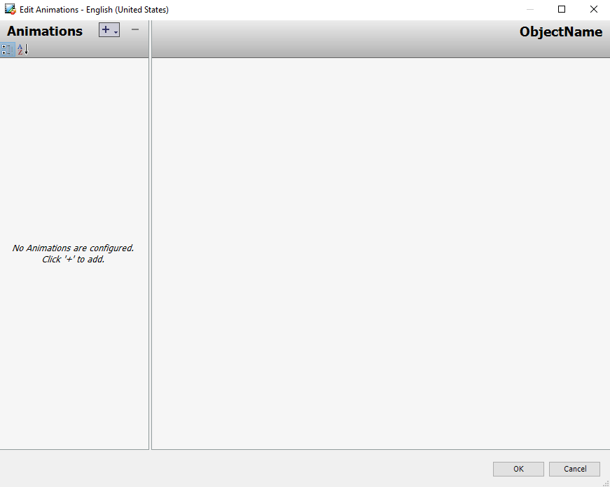
Value Display configuration — the "Name" state tab is selected, and "Tag Name" is chosen as the name to display. This will show the object's tag name at runtime. (Section 3-92)
Steps 48–52: Configure Value Display for AreaName and Set Fixed Canvas Size
Double-click AreaName, add a Value Display animation with States: String and Expression Or Reference: Me.Area. Then click the canvas, and on the Properties tab, change Graphic \ Size to Fixed (default 500 × 500 pixels).
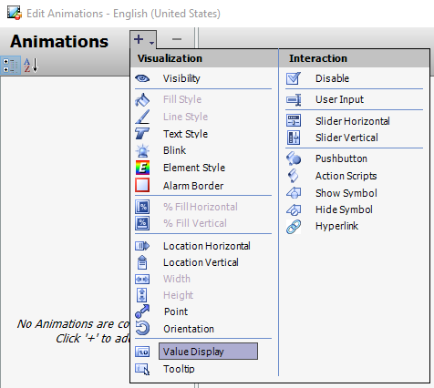
Edit Animations for AreaName — the String state tab is selected with "Me.Area" as the expression, which will display the area name at runtime. (Section 3-92)
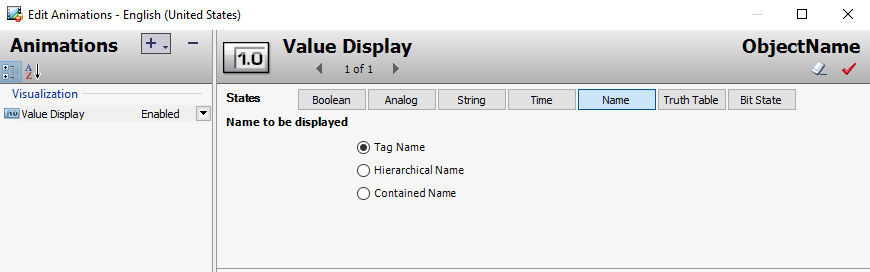
Symbol properties — Graphic \ Size is set to "Fixed" with FixedWidth and FixedHeight both at 500 pixels. This creates a fixed-size drawing canvas. (Section 3-93)
Part 6: Finalizing the Canvas
Reference: Pages 232–234 (Section 3-94 to 3-96)
Steps 53–58: Reposition and Resize
Right-click the canvas and select Select All. Drag all elements toward the top-left corner of the canvas. Click to deselect, then resize the canvas by dragging the bottom-right corner to ensure all elements fit within the canvas area. Save and close MixingProcess_Detailed, then save and close the $Mixer object and check it in.
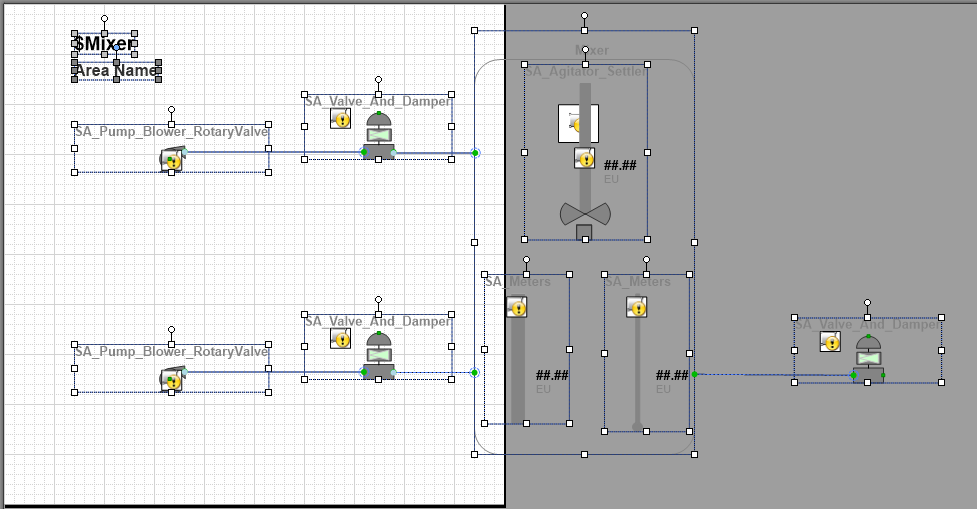
All elements selected (blue bounding boxes) and being dragged toward the top-left corner of the canvas — not all elements fit initially, requiring the canvas to be resized. (Section 3-94)
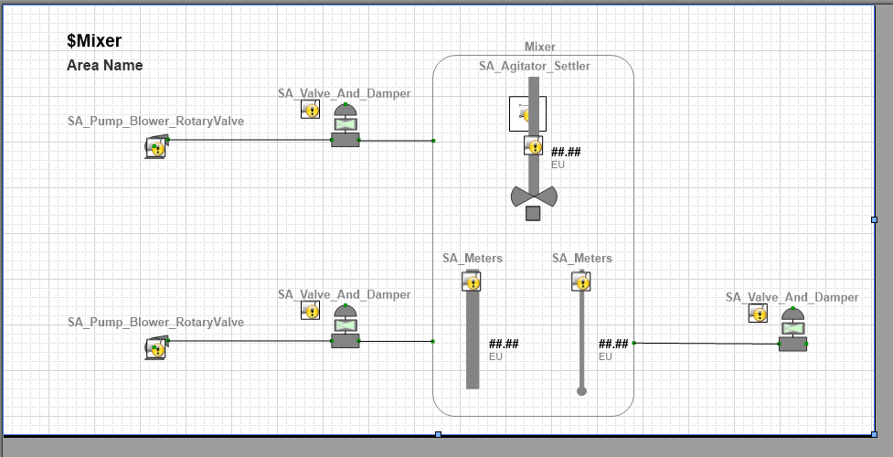
Final canvas layout — all elements are neatly arranged within the expanded canvas area, with the complete mixing process diagram showing pumps, inlets, mixer tank with agitator/level/temperature, connectors, labels, and outlet. (Section 3-94)
Steps 59–62: Test in Preview Session
Switch to the preview session and navigate to Assets \ Plant \ Production \ Line1 \ Mixer100 to view the custom graphic. The system automatically searches the current navigation first for auto-fill content. Then navigate to Mixer400 and Mixer500 to verify the symbols display correctly for other mixer instances.
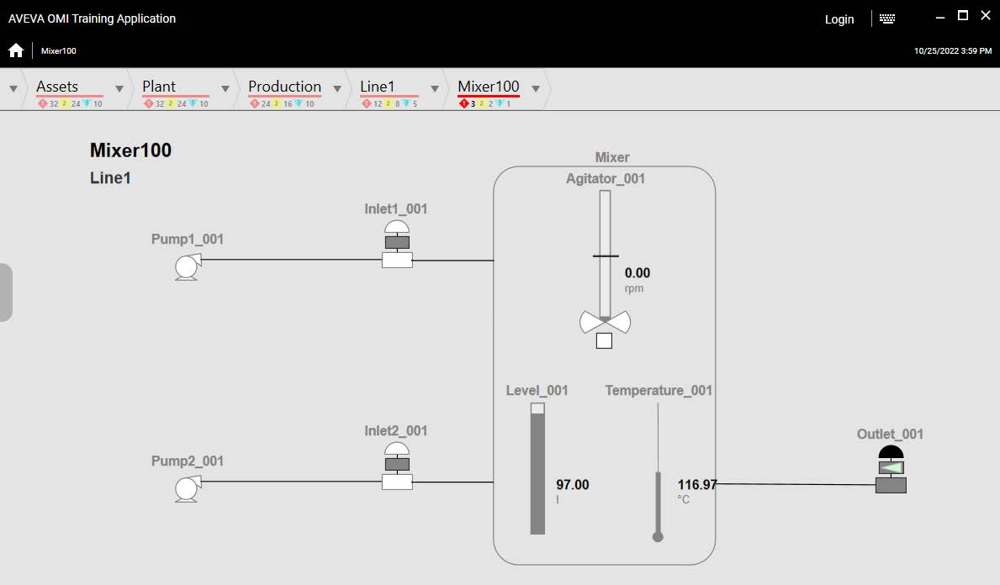
AVEVA OMI Training Application — Mixer100 display showing the complete mixing process diagram. The breadcrumb shows Assets > Plant > Production > Line1 > Mixer100. The diagram includes pumps, inlet valves, the mixer tank with agitator (0.00 rpm), level (97.00), temperature (116.97 °C), and outlet valve. (Section 3-95)
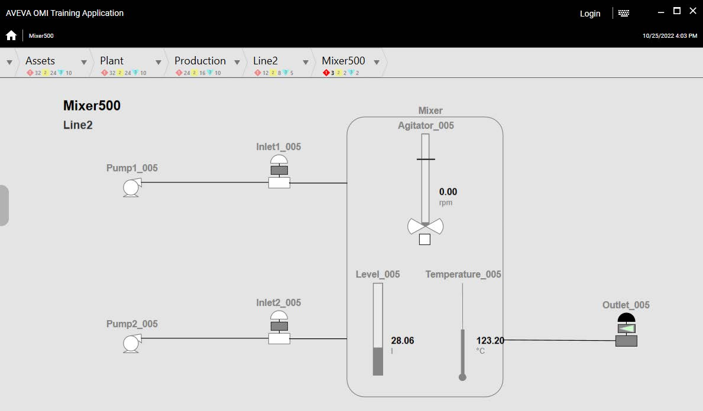
Mixer500 display — the same MixingProcess_Detailed symbol is reused for a different mixer instance, now showing Mixer500's data: Agitator_005 (0.00 rpm), Level_005 (28.06), Temperature_005 (123.20 °C). This demonstrates the power of template-based symbols with relative references. (Section 3-96)
Tip — Template Power: The MixingProcess_Detailed symbol was created once in the $Mixer template and linked to all contained objects via relative references. Because relative references resolve automatically based on the current object context, the same symbol works correctly for Mixer100, Mixer400, Mixer500, and any other mixer instance — without any additional configuration.
Quiz
Question 1
Why do you use the Relative References tab in the Galaxy Browser instead of browsing the Graphics tab when embedding contained symbols?
Click to reveal answer
The Relative References tab provides direct access to the child objects of the current container (e.g., Me.Agitator, Me.Inlet1, Me.Level). This ensures the embedded symbol is linked to the correct contained object through a relative reference that will resolve automatically at runtime. Browsing the Graphics tab would link to a static symbol rather than a dynamically-resolved reference to the contained object's data.
Question 2
What is the purpose of the "Send To Back" command when working with the SA_Tank_Vessel element?
Click to reveal answer
The SA_Tank_Vessel is placed on the canvas after the embedded equipment symbols, so it initially appears in front of them (covering the agitator, level, and temperature symbols). "Send To Back" moves it to the bottom of the z-order, placing it behind all other elements so the contained equipment symbols are visible on top of the tank.
Question 3
Why is it important to align Connection Points with the built-in connection points on adjacent elements?
Click to reveal answer
Connection Points must align with the built-in connection points on adjacent elements so that Connectors can snap to both points cleanly. If they are misaligned, the connector line may appear at an angle or not connect properly. The green border highlight when hovering confirms correct alignment.
Question 4
What does the Value Display animation with the "Name" state and "Tag Name" option display at runtime?
Click to reveal answer
It displays the object's tag name (the short name used in the Galaxy hierarchy) as text within the element. For example, when viewing Agitator_001, the ObjectName element would display "Agitator_001". When viewing Mixer100, it would display "Mixer100". This makes the symbol dynamic — it automatically shows the correct name for whatever object is currently being displayed.
Key Takeaways
Embedding via Relative References creates live links to contained objects that resolve automatically at runtime.
The Elements list z-order controls which elements appear in front — use "Send To Back" to layer background elements behind foreground content.
Connection Points define snap locations on element borders; Connectors draw process flow lines between them.
Value Display animations make text elements dynamic — they show object names, areas, or data values at runtime.
ElementStyles (Title, Heading, etc.) ensure visual consistency across all labels in your Galaxy.
Substitute Strings allows bulk text replacement in element properties.
Fixed canvas size ensures consistent symbol dimensions across all instances.
A single template symbol with relative references works for all derived objects without additional configuration.
Source: AVEVA™ Operations Management Interface 2023 Training Manual, Module 3, Lab 6 (pages 3-75 to 3-96)